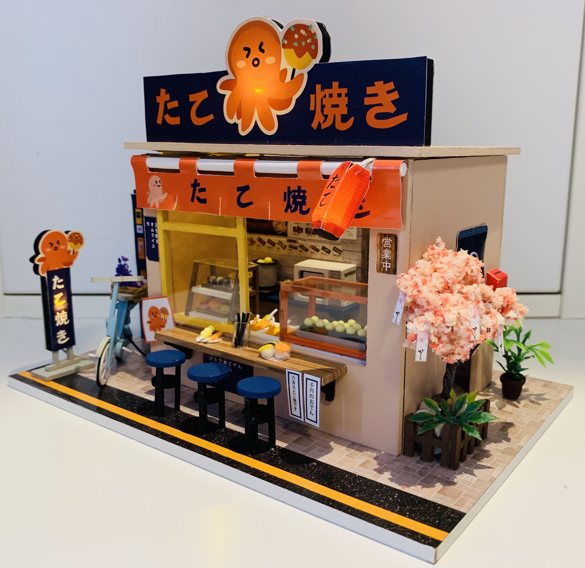
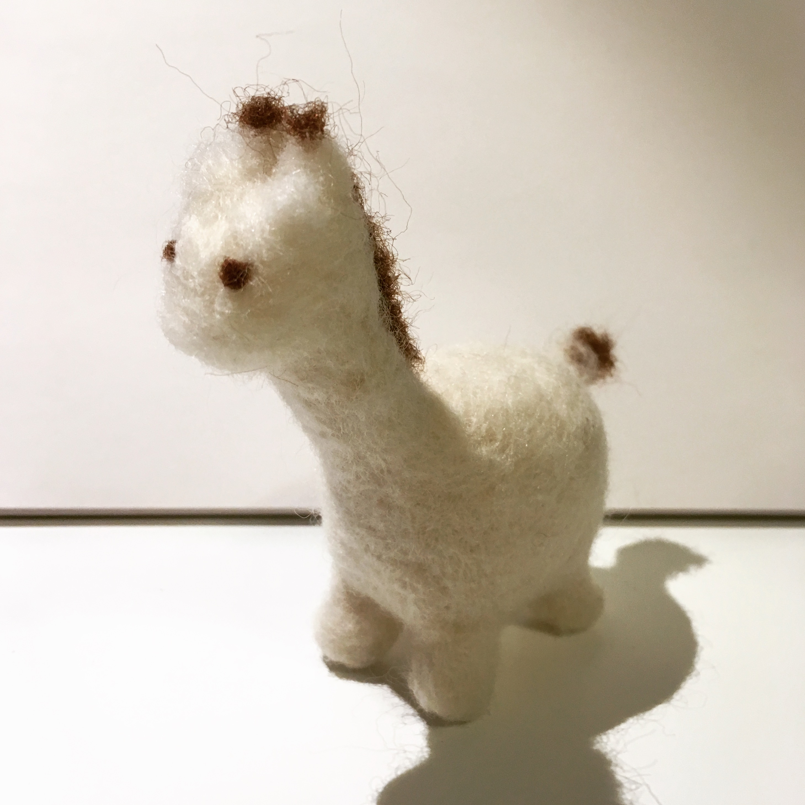
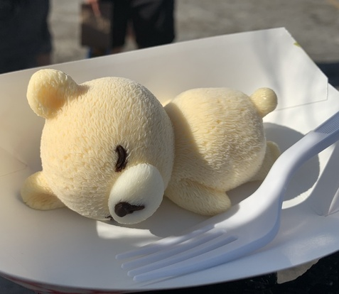

Hobbies

Something about me? I like collecting cute things and eating
sugary foods.
Over the summmer, I took on a small personal project to put together
a DIY music box (picture above). It took several weeks, but it
was really satisfying being able to see it finished.



Aside from DIY, I like to do some needle felting here and there-
making tiny, soft creatures in my spare time. The picture on the left
is a felt giraffe with no spots (it is about four inches tall).
This middle picture is from when I went to the 626 Night Market in
Santa Anita Park. 626 is essentially a large gathering for food
stalls and vendors that specialize in primarily cooking and selling
asian inspired and traditional food. The picture is a mango icecream-sherbert
bear. I love icecream, but it was pretty difficult to want to eat something this
cute.
As I mentioned earlier, I like to collect cute things. The right
picture is from a few years ago and was a small subset of my then
collection of plush octopodes.

A hobby that I've picked up relatively recently would be scuba diving!
Over the summer, I was able to get my scuba diving license for Open Water.
It was really fun being able to see a school of fish up close as well as
the many friendly sea turtles in the reefs of Maui.
This hobby was relatively close to my long-time hobby of swimming, so
passing the certification test was not too difficult.